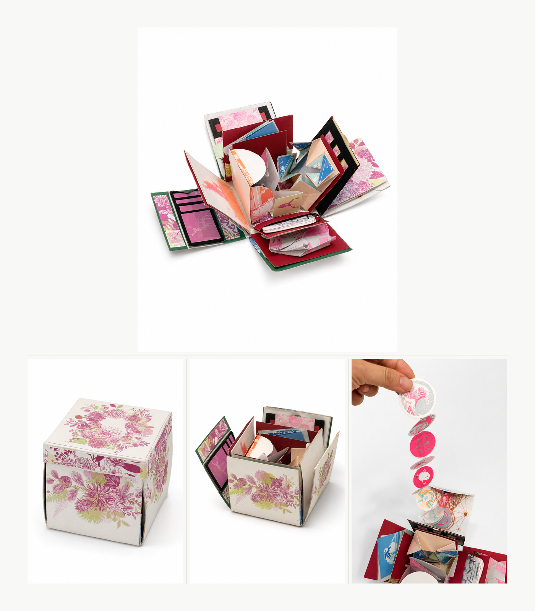

Early Work / 2018
Risograph Box
A handmade explosion-box project developed from risograph printing, paper construction, and collected classroom materials. The work brings together printed fragments, folded mechanisms, and small interactive elements, reflecting an early interest in craft, assembly, and the book as a container for shared material traces.
